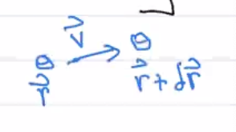
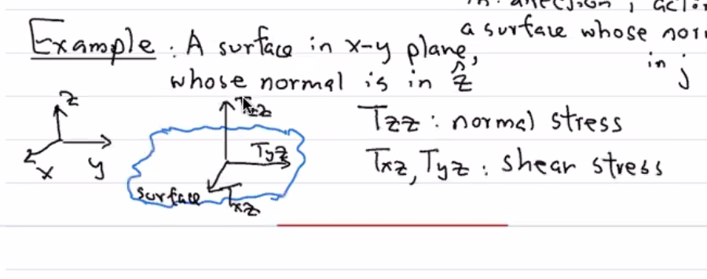
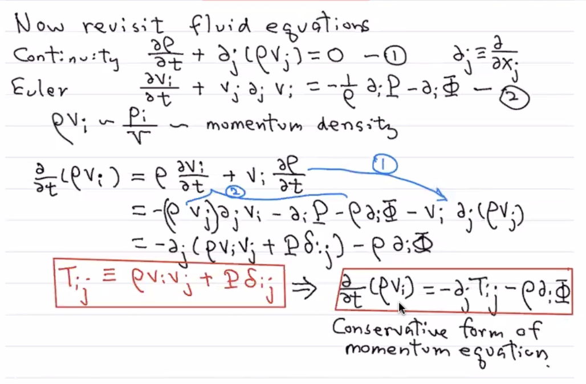
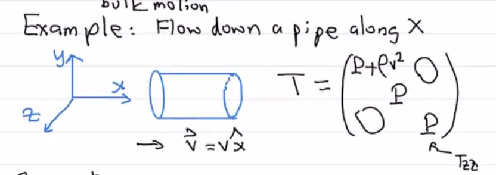

Basic Things about Fluids
Contents
Basic Things about Fluids¶
Fluid Approximation and the Fluid Element¶
The Fluid Approximation¶
We will start with three criteria (hand-wavy, order of magnitude criteria). When these three criteria are met, only then can we apply the fluid approximation. Let’s start by thinking about a fluid and fluid element (blue) of size \(L\):

\(L\) has to be large enough to contain many atoms or molecules. Mathematically, this is: \(L \gg n^{-1/3}\), where \(n\) is the mean number density of atoms. Note that \(n^{-1/3}\) is roughly the mean atomic spacing.
\(L\) has to be small enough that the “fluid properties” (temperature \(T\), pressure \(P\), mass density \(\rho\), etc) we are looking at are constant within the fluid element. Mathematically, this is: \(L \ll R\) where \(R \sim \frac{Q}{|\vec{\nabla}Q|}\) where \(Q\) can be any of our relevant quantities above. Note that \(\vec{\nabla}\) is the gradient.
The fluid is “collisional,” meaning we have frequent interactions between particles, enough to “erase” the individual trajectories of particles in the fluid. These collisions can be anything – physical, Thomson scattering, anything – so long as they are frequent enough. Mathematically, we have: \(L \gg \lambda\), where \(\lambda\) is the mean free path of the fluid. In this limit, frequent interactions allow particle distributions to depend only on macroscopic properties.
Counterexamples and an Example of a Fluid¶
Counterexample A note about Criteria 3 – when does this note occur (i.e., when are they “collisionless?”)? For example, in cosmology, cold dark matter (CDM) is a collisionless fluid (so are neutrinos), meaning extremely weakly interaction. Another example are photons, but that sort of depends on what is happening in the Universe. Photons rapidly interact with Thomson and Compton scattering depending on conditions. Photons after recombination (or decoupling) are no longer a fluid.
Example Let’s look at an example for which we can find an \(L\) to make us a fluid. Consider the Galactic HI disk:
\(n \sim 0.1 \text{ cm}^{-3} \rightarrow n^{-1/3} \sim 2 \text{ cm}\).
\(R \sim 10 \text{ kpc} \rightarrow 3 \times 10^{22} \text{ cm}\).
\(\lambda \sim \frac{1}{n\sigma} \frac{1}{(0.1 \text{ cm}^{-3})\times(10^{-15} \text{ cm}^{-2})} \sim 10^{16} \text{ cm}\)
Putting these together, we don’t have any problem finding an \(L\) to obey Rules 1, 2, and 3! No problem!: \(10^{16} \text{ cm}^{2} \ll L \ll 3\times 10^{22} \text{ cm}\). Note that if we have a weaker interaction like Thomson scattering \(\sim 10^{-25} \text{ cm}^{2}\), we pretty soon cannot use fluid theory.
Derivatives: Eulerian versus Lagrangian¶
A great thing to do on a Monday afternoon!
Having this general concept in mind, let’s move to a more mathematical and descriptive properties of these fluid elements moving throughout space. We must start with something we are familiar with – taking derivatives.
We have two choices in tracking the fluid element. In the Lagrangian perspective, we move along with the fluid element; the Eulerian approach looks at the time rate of change of a quantity while beign in a fixed frame. Note that numerically, there are many more considerations to Eulerian versus Lagrangian methods.
Deriving the Fluid Derivative¶
{kind=link}
Consier a fluid element at \((\vec{r},t)\), then at \((\vec{r} + \delta \vec{r}, t + \delta t)\) at a later time. A time change of any quantity \(Q\) (scalar, vector, tensor, …) in a fluid element:
Let’s Taylor expand:
Note that the \(\delta \vec{r}\) and \(\delta t\) terms are second order, and thus we can drop in the differentiation.
Collecting our tmerms, we have:
Note
One thing to be careful of in this class – keep track of vectors and scalars! If we hav a vector equation, everything must be a vector. If we have a scalar equation, everything must be a scalar.
Cleaning things up, we have:
where
\(\vec{v} = \frac{d\vec{r}}{dt}\) is the fluid velocity
The way to think about this equation is as follows:
In other words, we have:
This motivates the use of the Lagrangian operator:
Example: Newton’s 2nd Law Applied to a Fluid Element¶
Writing this as \(F/m\) on the lhs gives the Navier-Stokes equation from last time!
We emphasize here that the advection term is second order in \(v\), making life extremely difficult.
Also, recall that, when we have \(\vec{v}\cdot \vec{\nabla}\) . Be careful moving to different coordinate systems! Any time you are confused, go back to Cartesian (to comprehend).
Mass Conservation and the Continuity Equation¶
Consider a fluid of mass \(M\), density \(\rho\), velocity \(\vec{v}\). Let’s examine the time change of \(M\). Note that \(\rho \vec{v}\) is the flux.
Let’s re-write the left hand side in terms of density and the right-hand side using the divergence theorem:
The integrads should be equal, giving the continuity equation in differential form (Eulerian framework):
If we use the Lagrangian operator we defined above, we have the continuty equation in the Lagrangian framework:
We will still likely use the Eulerian form mostly, but Lagrangian forms allow us to discuss incompressible flow.
Incompressible flows/fluids
This means that the individual fluid elemnts preserve their density along their paths. When this is the case, we have:
Incompressible flows are thus awesome because we can drop the divergence of \(\vec{v}\) terms.
Another way of saying this: if the velocity field is divergence free, we have incompressible flows.
To beat this to death: Incompressible flows are divergence free. Applications to come later.
Momentum Conservation: The Euler Equation, Pressure, and the Stress Tensor¶
There are two forces to consider: gravity and pressure. Let’s consider them separately, starting with pressure.
Pressure Forces¶
{kind=link}
The force due to thermal pressure (gradient) (not shear stress or other fancier forms, but just a classic pressure gradient giving a force) along a direction \(\hat{n}\) (not necessarily normal to the surface) over surface \(S\) due to pressure \(P\) is:
Let’s use the divergence theorem again, giving:
Note that \(\hat{n}\) is not affected by the gradient, and thus:
We typically want the force per unit mass, which is:
An important note: if there is no gradient of pressure, there is no pressure force. Forces move things from high pressure to low pressure, and that is why we have the minus sign in front of the gradient.
Gravitational Forces¶
Again, we want the force per unit mass due to gravity:
Let’s take the surface integral of \(\Phi\):
Using the divergence theorem again (over a sphere for the right side), we have:
This gives one of our favorite equations, the Poisson equation!:
Collecting our Work¶
The force on a fluid element is thus:
And substituting in our work, we have the Lagrangian form of the Euler equation for momentum conservation
Re-writing for the Eulerian form, we have the Euler Equation for momentum conservation:
A Real Quick Summary of our Three Fluid Equations¶
Counting Degress of Freedom¶
Above, we motivated and derived three fluid equations:
The Continuity Equation
The Euler Equation
The Poisson Equation
Counting degress of freedom, we have \(5\) real, independent equations. But how many unknowns? We have \(\vec{v}\), \(\rho\), \(P\), and \(\Phi\).
We thus cannot uniquely solve our equations – we need one more to close our system of equations: the equation of state relating the ressure to the density. Once we have that, we have six equations with six unknowns.
As we saw above, we need one more piece of information to close fluid equations. We will start with a closer look at pressure.
A Closer Look at “Pressure”¶
Here are some examples:
Thermal pressure
The most familiar pressure to us – the \(P\) in \(PV=nRT\)!
Due to isotropic random velocities of molecules in a gas
Ram pressure
Something ramming into something else – important for thinking about galaxy collisions/galaxies moving through clusters, hot gas, and dark matter haloes
Due to the bulk motion
Radiation pressure
Due to photons imparting momenta from themselves to other objects
What are the units of pressure?
What do we mean by momentum flux? Let’s examine units:
Generalizing Pressure to the Stress Tensor¶
With this in mind, we can move on by generalizing pressure to a more fundamental object – the stress tensor \(T_{ij}\). This is a rank \(2\) tensor, which we can think of as \(3\times3\) matrix.
Note
In general, forces across a surface do not have to be perpendicular to the surface. The natural way to express these more general forces are with the stress tensor.
The force in some direction \(i\) is given by:
where \(S_j\) is the surface and \(T_{ij}\) is the force per area in direction \(i\) action on a surface with normal in the \(j\) direction. Note that repeated indices are implictly summed over: if we want to know \(F\) in the direction of \(x\), we have \(F_{i} = T_{xx}S_{x} + T_{xy}S_{y} + S_{xz}S_{z}\).
An Example:¶
A surface in the \(x-y\) plane, whose normal is in \(\hat{z}\).
{kind=link}
In this setup:
\(T_{zz}\) is the normal stress.
\(T_{xz}\) and \(T_{yz}\) have similar interpretations – forces in the plane are shear forces/shear stresses.
Just to stress again: the first index is the direction of the force.
Revisiting the Fluid Equations with the Stress Tensor¶
Recall the Continuity Equation:
where
And the Euler Equation:
We will now re-write (2) in a more interesting form with some algebra.
Before we continue, note that mass flux is the same thing as momentum density:
Also:
We will use \((2)\) to replace \(\frac{\partial v_i}{\partial t}\) in the first term.:
And we will use \((1)\) to replce the second term:
Thus:
This motivates:
With thjis definition, our fluid equation becomes:
This above equation is sometimes called the Conservative Form of teh Moemntum equation/Euler Equation. It is basically the Euler Euqation in a different form. It looks very analogous to the contunity equation! Note that his is the \(1st\) velocity moment of the phase-space distribuiton. We can then take the second and third moments to build Jeans equations.
A complete derivation of the above is here:
{kind=link}
Let’s look at the equation for \(T_{ij}\) a bit more closely:
Note that we didn’t do anything special to get the ram pressure term. It really came from being embedded in the Euler equation.
Example: Fluid Flow Along A Pipe¶
{kind=link}
Let’s consider fluid flowing along a part in the \(\hat{x}\) direction: \(\vec{v} = v \hat{x}\).
\(T_{zz}\) and \(T_{yy}\) are just pressure! We have no velocity along \(y\) or \(z\).
We also have no off diagonal terms since \(v_{y}\) and \(v_z\) are both \(0.\)
\(T_{yy}\) and \(T_{zz}\) have pressure.
\(T_{xx}\) has both pressure and ram pressure. \(T_{xx} = P + \rho v^2\).
Some comments for the record:
\(T_{ij}\) can have other terms than shown here. For example, due to viscosity, magnetic pressure, neutrino (important for CMB anistropy) or other anisotrpic stresses. Note that the example above have \(0\) off-diagnoal terms since we have isotropic stress.
Ram pressure is relevant for gas content in galaxies that reside in galaxy clusters. Think about the term “ram stripping” which is often needed to explain the red colors of galaxies in cluster.
Energy Conservation and the Equation of State¶
A Quick Thermodynamics Review¶
Our favorite class from undergrad…but not as great as E&M.
The First Law
We also had the idea of specific heat \(C_V \equiv \left(\frac{\partial Q}{\partial T}\right)_V = \left(\frac{\partial \mathcal{E}}{\partial T}\right)_V\) when we hold volume fixed. This allows us to re-write the First Law as:
We also had \(C_P\) where we hold the pressure consant, and we can relate \(C_V\) to \(C_P\).
An Ideal Gas¶
Only obeyed for:
Randomly moving atoms or molecules.
Intermolecular/atomic forces are negligible.
Negligible volume occupied by the molecules (point-like particles).
In this ideal gas limit, pressure is entirely due to kinetic motion of the particles. For this kind of gas, we have the following Ideal Gas Law Equation of State:
We can now take derivatives!
Go back to the First Law:
We can now write:
Adibatic, Ideal Gas Equation of State¶
In the special gas of an adiabatic (no heating or cooling due to dissipitative processes, \(\mathrm{d}Q =0\)) ideal gas, a bunch of other nice things happen!
We first have a new expression of the First Law of Thermodynamics:
We can use \(PV=Nk_bT\):
The solution gives:
Remember our goal: we wanted to relate pressure to density, and we now have temperature and volume. How do we make the last step? Well we have \(P \propto T/V \propto V^{-\frac{Nk}{C_V}-1}\). This exponent is nothing but \(C_P/C_V\)!:
where \(\gamma \equiv C_P/C_V\) is the adiabatic index. Since \(\rho \propto V^{-1}\), we have the Equation of State for an Adiabticc, Ideal Gas:
This is an exmaple of a baro-tropic equation of state – the pressure is entirely detemrined by \(\rho\).
Adiabatic Index¶
Recall that \(\gamma\equiv \frac{C_P}{C_V}\).
For a monatomic gas, \(\mathcal{E} = \frac32 NkT \rightarrow C_V = \frac32 Nk \rightarrow C_P = \frac52 Nk\).
This gives
For a diatomic gas: \(\mathcal{E} = \frac52 NkT \rightarrow C_V = \frac52 Nk \rightarrow C_P = \frac72 Nk\), and thus:
An Aside: Energy in an Ideal Gas¶
Let’s review equations from last time, and then derive the enery conservation equation.
Last time, we saw:
The First Law: \(\mathrm{d}Q = \mathrm{d}\mathcal{E} + P\mathrm{d}V\)
Adiabatic, Ideal Gas Law: \(P = k \rho^\gamma\), where \(\gamma \equiv \frac{C_p}{C_v}\) is the adiabatic index.
This is a very good example of an equation of state. We will see more!
A few words about \(k\):
This coefficient \(k\) can be shown to be related to entropy \(S\):
We will push this a bit farther –
Assuming adiabatic expansion, we have:
Using our equation of state \(P\propto \rho^\gamma\) we have:
We can re-write this last expression for the internal energy:
Thus, we have shown that the internal energy (per unit mass) is:
Or, we can do this in terms of volume instead of mass:
Energy Density in an Ideal Gas:¶
We want to see how the total energy changes with time:
The first two terms are easy to deal with, so let’s begin with the internal energy change as a function of time.
Let’s start with: \(\rho=M/V\), and \(\mathrm{d}\mathcal{E} = \mathrm{d}Q - P \mathrm{d}V\). This expression tells us that:
This makes our expression for the internal enegy:
where \(\dot{Q}_{cool}\) is the cooling function (per mass). Note that it is convention to say that it is a cooling function (because of the minus sign). \(\dot{Q} > 0\) is fluid is cooling. \(\dot{Q} < 0\) for heating. This depends on the microphysics.
We now want to calculate the full change in energy density:
This looks complicated, but we know lots of stuff!
The first term is related to the continuity equation.
The second term of \(\vec{v} \cdot \frac{D\vec{v}}{Dt} = -\vec{v} \cdot \vec{\nabla} P - \rho \vec{v} \cdot \vec{\nabla}\Phi\) from the Euler equation.
The potential derivative term can be written as:
And the last term, from Contunity equation:
If you stare at these equations, some nice cancellation happens! Collecting terms, we have:
The left hand side, by the way, is:
Notice! The right hand side and left hand side have some common terms, now! Magic happens when we put this into a suggestive form!
This is energy conservation equation! This is worth a note of its own, noting that \(E\) is the energy density:
Energy Conservation Equation
where \(E\) is the energy density.
Enthalpy and Energy Flux¶
Recall this foreign concept from way long ago…
The reason we are bothering with this quantity is because it sort of appeared in our enery conservation equation:
Note that \(P/\rho = PV/m\) which allows us to recognize it as enthalpy per unit mass \(h\).
Now, we can write down an expression that we will call energy flux:
Our expression above is thus:
Executive Summary for Inviscid (non-viscous) Fluids¶
Quantity |
Density |
Flux |
Conservation Equation for Quantity |
|---|---|---|---|
Mass |
\(\rho\) |
mass per time per area \(= \rho \vec{v}\) |
\(\frac{\partial \rho}{\partial t} + \vec{\nabla}\cdot(\rho\vec{v}) = 0\) (Continuity Equation) |
Momentum |
\(\rho \vec{v}\) |
\(T_{ij} = P\delta_{ij} + \rho v_i v_j\) |
\(\frac{\partial}{\partial t} \left(\rho v_i \right) + \partial_j T_{ij} = -\rho \partial_i \Phi\) (Euler Equation) |
Energy |
\(E = \rho\left(\frac12 v^2 + \Phi + \mathcal{E}_{permass}\right)\) |
\(\vec{f} = \rho\vec{v}\left(\frac12 v^2 + \Phi + h\right) = (E+P)\vec{v}\) |
\(\frac{\partial E}{\partial t} + \vec{\nabla}\cdot \vec{f} = -\rho\dot{Q}_{cool} + \rho \frac{\partial \Phi}{\partial t}\) (Energy Conservation) |
Example Simple Solutions: Hydrostatic Equilibrium, Polytropic Stars, and the Lane-Emden Equation¶
Hydrostatic Equilibrium¶
Let’s start solving the three equations above! The most obvious first place to start is with hydrostatic equilibirum.
Hydrostatic means that \(\vec{v} = 0\).
Equilibrium means that \(\frac{\partial}{\partial t} = 0\).
Start with our three equations:
1. Continuity Equation: Satisfied trivially: \(0=0\)
2. Euler’s Equation:
3. Poisson:
Using \(2\), \(3\), and the Equation of State, should give us solutions! Thus, the solution will depend on the equation of state.
Example 1: Atmosphere¶
Assume an isothermal equation of state for the atmosphere (approximately true for the lower stratosphere, about \(15\) to \(35\) kilometers up). Treating this as an ideal gas:
where \(\mu\) is the mean molecular mass of our gas. Note the right side is a ton of constants since we have an isothermal atmosphere. Thus, \(P = A\rho\) for some constatnt \(A\). That is: \(P\propto \rho\). Also note that:
Note that for the surface of a planet, we have \(\vec\nabla \Phi = -\vec{g}\) which is constant near Earth’s surface.
Using this information, we have:
Let’s choose \(\vec g = -g \hat{z}\).
This gives:
This has a well-known solution!
is the exponentially stratified soluiton. Putting in some numbers, we have:
Atmosphere: \(T \sim 300\) K \(\boxed{\rightarrow z_s \approx 9}\) km.
At Mauna Kea, we have \(z \sim 14000\) feet, which is about \(z\sim 4.2\) km. This gives \(\rho(z = 4.2 km) \approx 0.63 \rho(0)\).
The same is true for pressure since we assumed an equation of state of \(P \propto \rho\).
Example 2: Adiabatic Atmosphere¶
The adiabatic equation of state is different than an isothermal equation of state. The adiabatic approximation holds for the troposphere (see PS 1 in which we derive \(\frac{dT}{dz}\)).